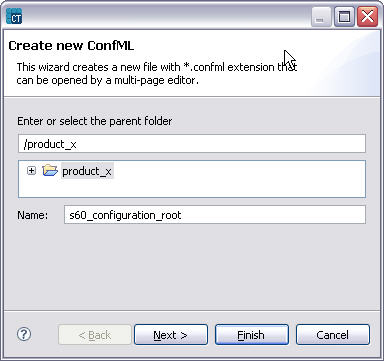
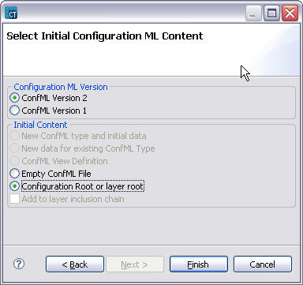
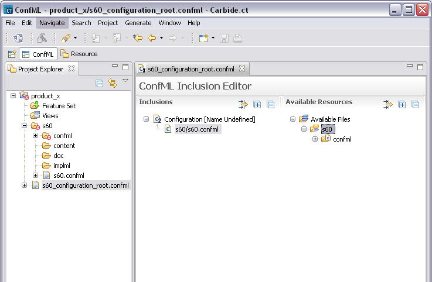

Creating configuration root files
Configuration root files (in ConfML format) can be created for the Configuration Project or for the individual layers. They define both the layer properties and inclusions of other ConfML files. Each layer must have at least one layer root file.
To create a configuration root file:
- Right-click the project and select New > Configuration file.
- In the dialog, specify the name of the root file and click Next.
- Select the version of the ConfML file (usually confml 2).
- Select the Configuration Root or Layer root option, as shown in the example below:

Figure 6 Root file creation wizard
- Click Finish. You can now edit the file with Inclusion Editor, which opens automatically, as shown in the example below.

Figure 7 Including confml files into root file
- Repeat this sequence to add layer root files (e.g. to s60 layer add s60/s60.confml)